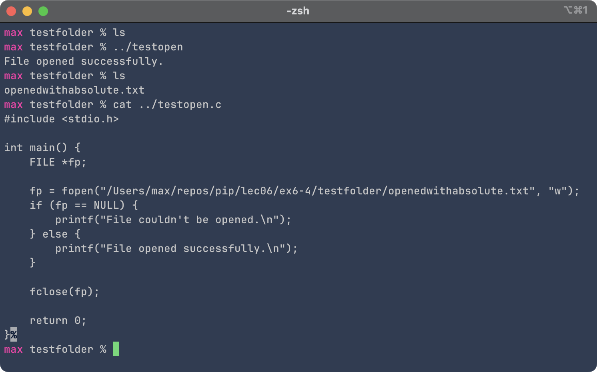

Maximilian Fernaldy - C2TB1702
Opening a file can be done using the fopen() function defined in <stdio.h>.
#include <stdio.h>
int main() {
// Define file pointer
FILE *fp;
fp = fopen("sample.txt","r");
// Handle error if file can't be opened
if( fp == NULL) {
printf("Can't open file.\n");
return 1;
}
else
printf("success\n");
fclose(fp);
return 0;
}
to open a file, we must first define a file pointer. Note that this kind of pointer is different from pointers previously discussed. FILE *fp and int *px are different kinds of pointers, because here *fp is a file pointer, not a variable pointer. A file pointer contains information about where the file is located on the storage device (without specifying relative or absolute directories, it would be in the same working directory as the binary/executable), while a variable pointer contains the memory address of a variable, i.e., the location of a variable on the RAM device. A common misconception is that when fopen() is ran, it copies the file to the RAM for reading and writing, but this is incorrect. fopen() simply collects information about where a file is stored on the storage device, and the file won't be copied to the RAM unless it's later explicitly read or written to.
Generally speaking, there are two possibilities for the return value of fopen(). If it was successful in opening the file, it will return the file pointer (which is of type *FILE). If it was not, it will return NULL. This might happen if the file is opened for reading, but the file does not exist, so there is nothing to read. There are also other possibilities like insufficient permissions to access the file. In this case we should notify the user and return an exit code of 1. If this doesn't happen, fopen() will have successfully opened the file, and thus we can proceed with the program.
When the file sample.txt is created and in the same directory as the program, it runs successfully.
fopen() To use fopen(), the syntax is as follows:
file_pointer = fopen("filepath", "am");
where filename is the file path (which includes its name following the directory path, if specified) of the file to open, and am is the file access mode (also called file access flags).
| File access mode string | Meaning | Explanation | Action if file already exists | Action if file does not exist |
|---|---|---|---|---|
| "r" | read | Open a file for reading | read from start | failure to open |
| "w" | write | Create a file for writing | destroy contents | create new |
| "a" | append | Append to a file | write to end | create new |
| "r+" | read extended | Open a file for read/write | read from start | error |
| "w+" | write extended | Create a file for read/write | destroy contents | create new |
| "a+" | append extended | Open a file for read/write | write to end | create new |
These file access flags are essentially modes in which the program interacts with the file. Notice that write mode is essentially just for creating new files, because it overwrites any existing data. In order to add to a file instead, the append mode should be used. These file access flags are crucial as they determine what we can and can't do with the file later in the program. They also determine whether the file is accessed in binary mode or plaintext. If a b is appended after the file access flag (i.e., rb, wb, rb+, wb+, etc.), the program will open the file in binary mode instead of formatted text.
fopen() Earlier, I said that in addition to opening files in the same folder (cwd - current working directory) as the binary/executable program, the program can also interact with files outside of it and in subfolders inside it. This is done through relational and absolute file paths. As their name suggests, they are two different ways to access files in the storage system: relational file paths work by specifying the position of the file in relation to where the current working directory. Absolute file paths work by specifying the location of the file in relation to the root of the file system.
To use the absolute path of a file or directory, the first character in the string of directories should be the path separator. This path separator depends on which operating system is installed on the storage system. On UNIX-like operating systems like macOS and Linux, the path separator is the single forward slash ('/'). On Windows, it's a backslash ('\'). The next directory would then be a folder inside the root folder, for example, perhaps "Users" on macOS and Windows, or "home" on Linux. Usually, "Users" and "home" would be followed by the user folders, for example, mine is called "max", then this folder contains folders that we are more familiar with - Desktop, Documents, Pictures, etc., created by the operating system to facilitate basic organization of our files.
Although it's technically correct that the root of a Windows filesystem is the path separator backslash ('\'), using this inside fopen() might not work. This is because Windows utilizes drive letters. The drive letters A: and B: are reserved for floppy disk drives (they were still very much in common use when the operating system was created), so almost all Windows systems will have the operating system itself installed on the C: drive. Then, drive letters D:, E:, F: and so on can be added by the user after installation for storage purposes. An example absolute file path would then look like this on Windows:
C:\Users\max\repos\pip\lec06\ex6-4\ex6-4.md
fopen() 
As the name suggests, using relative file paths involves specifying the position of the target file relative to that of the current working directory. This is done through several characters defined through conventions that mean specific things when used in a directory path.
| Character | Name | Meaning/use |
|---|---|---|
| . | Single dot | current directory |
| .. | Two dots | parent directory of current directory |
| * | Asterisk | Wildcard character, used to denote a placeholder matching multiple characters or filenames. For example, in a folder with sample.txt, hello.txt and script.py, *.txt will select sample.txt and hello.txt. |
| ~ | Tilde | (UNIX-like only) used to denote the home directory of the current user. |
To access folders 2 levels above the current one, the parent directory symbol can be used twice in a row, effectively meaning the parent of the parent of the current directory. They can be repeated until the parent directory is the root folder, in which case there are no more levels above it.
fopen()
Notice how at first, the program was not able to open the file, because the working directory was testfolder instead of ex6-4. This confuses the program because it tries to search for the subfolder testfolder when we are already inside it, and there is no subfolder called testfolder inside of testfolder. Once we go back up to the ex6-4 directory, everything works fine. This is important to remember: the binary will always use the working directory (as in where the program was executed from) as its reference point, not where the binary itself is located.